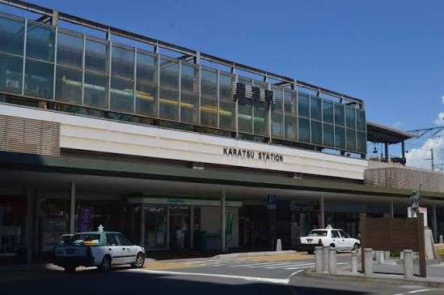
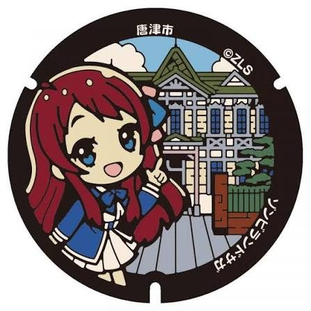
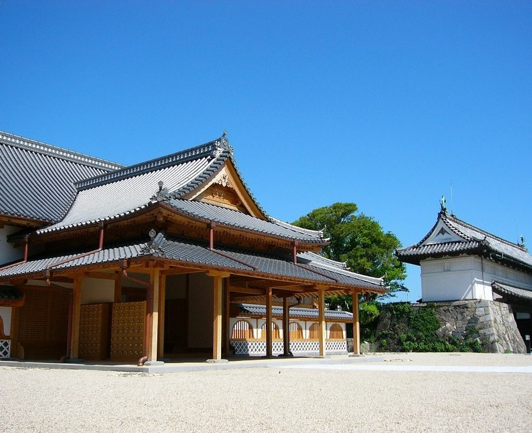
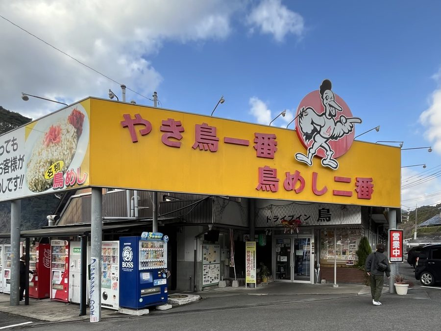
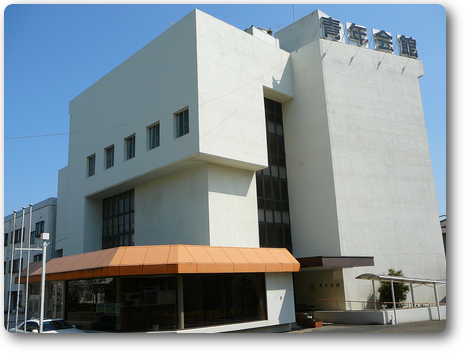
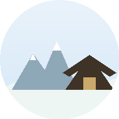

← 前の日
次の日へ →

合流 09:30前

唐津駅・アルピノ・唐津城・西唐津駅・鏡山展望台・波戸岬・虹ノ松原 など
～聖地巡礼～
12:00前後牧のうどん 和多田店／井手ちゃんぽん 唐津店／からつバーガー 松原本店 など
出発 15:00寄り道候補：道の駅厳木（名物ソフトクリーム・佐用姫像）

到着 16:30前時間の許す限り佐賀市内を聖地巡礼
出発 18:50頃

到着 20:00前宴会コース 〜22:00

到着 23:00前後お風呂が狭そうならスーパー銭湯こもれびも可
